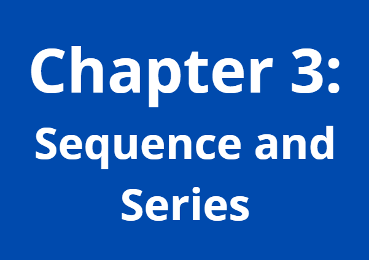

Read brief explanations and colorful infographics
Head over to the 'Grade 9' and 'Grade 10' tabs above, or click the buttons below according to your grade!
Watch tutoring videos with real-life applications of topics discussed
Click the 'Videos' tab above, or click the button below to visit our channel on YouTube! Watch all 5 episodes and master the topics commonly examined in Grades 9 and 10.
Get to know the author as well as her intentions and goals in creating this website!
Head over to the 'About' tab on the navigation bar above, or watch the introductory video below!
Study immediately!
Need to study quickly for an upcoming exam? Wait no more! Directly access the 'Grade 9' and 'Grade 10' tabs above, or watch the lesson videos in the 'Videos' tab.
a. Blue Chapters (Grade 10)
The chapters with blue covers are special topics that 10th graders have, 9th graders may learn from them in advance if they wish to.
b. Red Chapters (Grade 9)
Chapters with red covers are prepared for Grade 9, some topics may be related to those in Grade 10. 10th graders may revisit them for a quick flashback.

c. Purple Chapters (Grades 9-10)
Purple chapters hold topics that both grades 9 and 10 would need. All of these topics are provided with video tutorials which can be accessed in the 'Videos' tab.